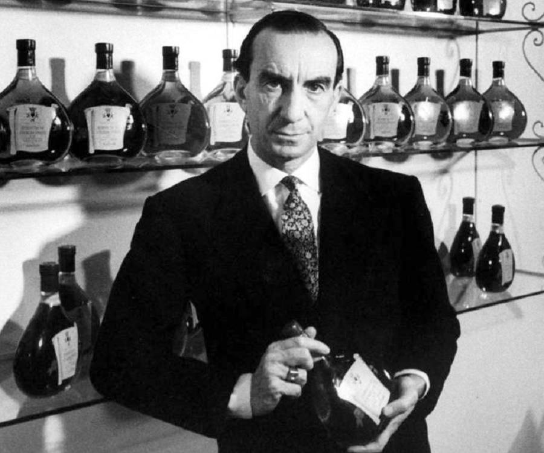

History
Origin Story
Gucci is an Italian fashion label founded in 1921 by Guccio Gucci, making it one of the oldest Italian fashion brands in operation today. Like many historic fashion houses, the brand started out as a luggage manufacturer, producing luxury travel goods for Italy’s wealthy upper-classes, as well as equestrian equipment.
Initially the brand produced primarily leather goods, as well as premium knitwear, silk goods, shoes and handbags. During the second world war, material constraints owing to the war effort forced the label to use cotton to create their goods. It was during this time that the label introduced its distinctive “Double-G” monogram, as well as the now iconic Gucci stripe, consisting of two green stripes interrupted by a single red bar.

Creators/Designers

In 1921, he founded the House of Gucci in Florence, as a small family-owned leather shop. He began selling leather bags to horsemen in the 1920s. In 1938, Gucci expanded his business to a second location in Rome, at the insistence of his son Aldo. His one-man business eventually turned into a family business, when his sons joined the company.
In 1951, Gucci opened their store in Milan. He wanted to keep the business small and while he was alive, the company remained only in Italy. Two weeks before Guccio Gucci's death, the New York Gucci boutique was opened by his sons Aldo, Rodolfo, and Vasco.
Collaboration(s)

Introducing the collection of ready-to-wear and accessories that takes its cue from the Dapper Dan archive created with the House’s refined materials. Featuring a new yellow Gucci logo, the pieces were shot by Ari Marcopoulos on young faces from Harlem.